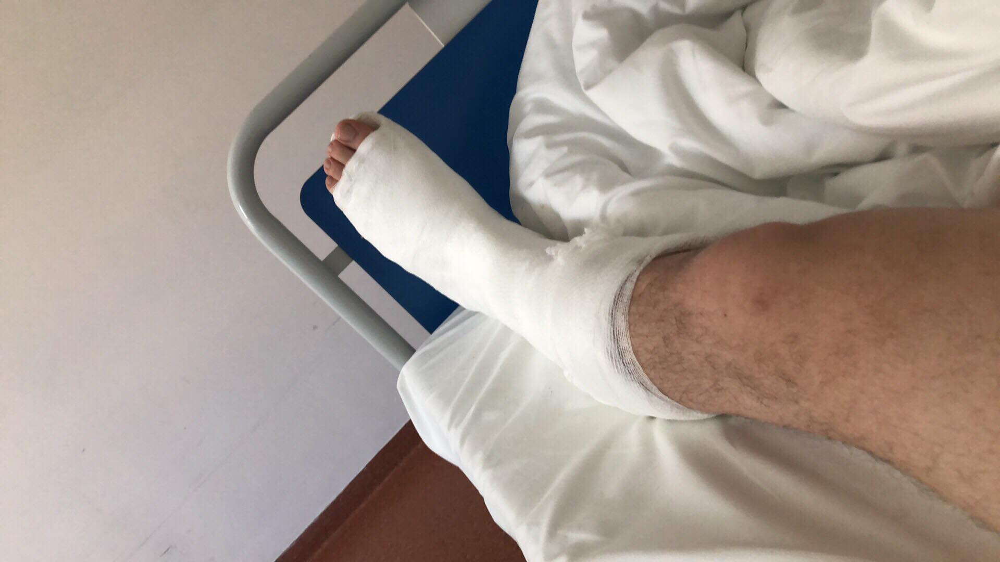

Začal by som jedným výrokom ktorý znie takto: Ak chcete Boha rozosmiať, naplánujte si niečo.
A mi sme ho teda naozaj rozosmiali. Už od minulého roka som mal veľké plány na sezónu 2019. Plánoval som,
že s logom SILVER MOTO na drese sa zúčastníme od prvého do posledného podujatia Majstrovstiev Slovenska v countrycrosse a endure.
Plány sa však zmenili...
Začiatok sezóny odsunuli zdravotné problémy
Zdravotne v poriadku na začiatku sezóny bohužiaľ nebol ani jeden z nás dvoch. Ja som sa zotavoval z operácie kolena, ktorú som podstúpil začiatom roka a Oliverovi tiež šťastie neprialo, keď si pri práci poranil chodilo na ľavej nohe. Na tradičný začiatok sezóny na krásnej pieskovej trati v Borskom Mikuláši sme sa bohužiaľ pripraviť nestihli.

O 2 týždne neskôr sa opäť konal countrycross zo seriálu Majstrovstiev Slovenska, tentoraz v Skýcove. Oliver už na tom bol zdravotne
lepšie a závodu sa mohol zúčastniť. Ja a moje koleno sme medzitým naďalej poctivo rehabilitovali.
Oliver odjazdil obidva súťažné dni bez ujmy na zdraví, takže cieľ bol splnený.
Sám Oliver zhodnotil celý víkend takto
zistil som, že ešte musím trénovať a prichystať sa lepšie, ale skúsenosť a tréning dobrý. Ale treba rýchlosť,
odvahu a nastaviť hlavu na jazdenie a bude to super. Nato ešte potrebujem trochu času.